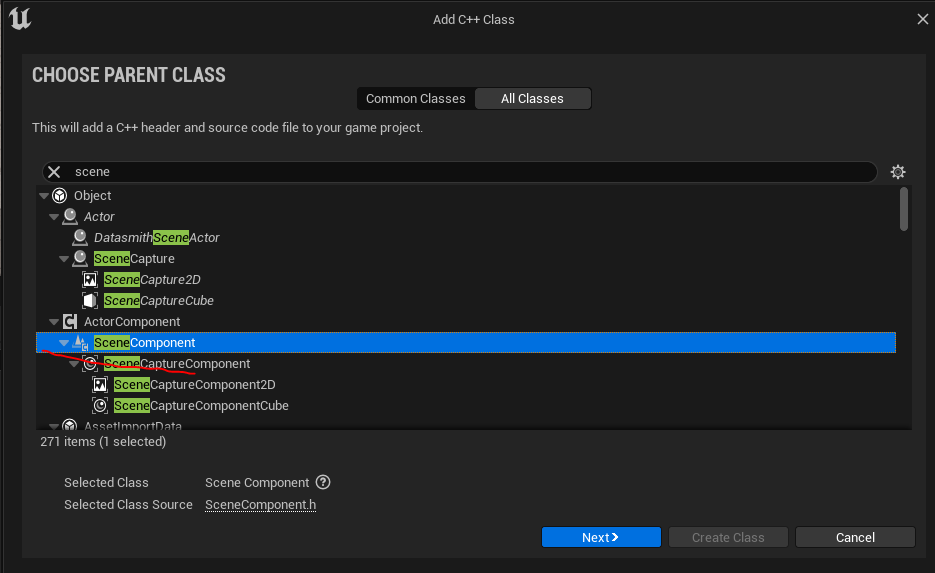
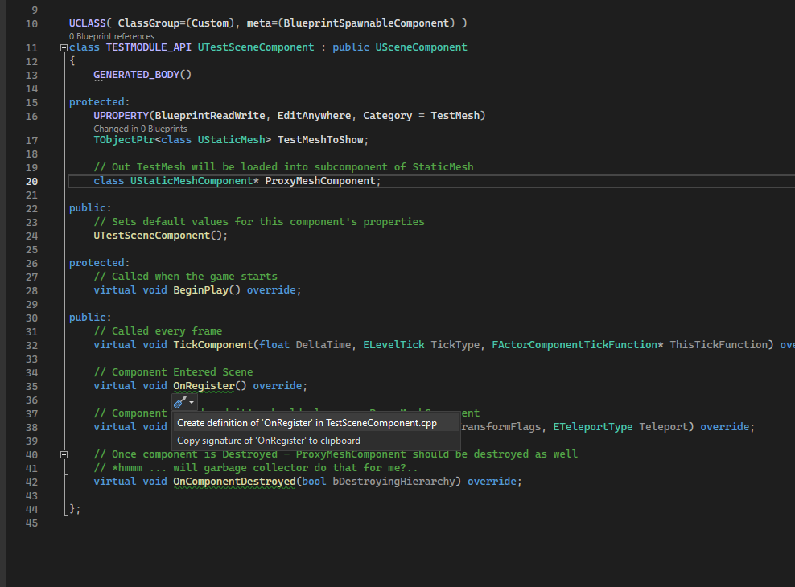

Компоненты в Unreal Engine
В этой статье мы освоим компоненты, а так-же попробуем сделать с ними все, что может понадобиться в реальной практике.
Файлы классов мы будем создавать внутри blueprint-based проекта с модулями.
Компоненты для теста будут добавляться в основной blueprint класс персонажа - BP_ThirdPersonCharacter.
{kind=link}
Введение в компоненты
Компоненты - одна из сильнейших сторон Unreal Engine (и его "ахиллесова пята", потому что именно компоненты - главная причина плохой производительности движка при работе с большими сценами).
Благодаря компонентам разработчик может конструировать игровые объекты. Они - один из лучших способов организации игровой логики.
Чтобы добавить компонент к блюпринту BP_ThirdPersonCharacter нажмите на кнопку Add в меню Components.
{kind=link}
Вы увидите огромное количество доступных для использования компонентов.
{kind=link}
Класс персонажа по умолчанию состоит из следующих компонент:
{kind=link}
Важно понимать, что компоненты можно создавать и через блюпринты.
Однако у таких компонентов не получится создать визуальную составляющую, как бы вы этого не хотели. К тому-же производительность blueprint компонентов оставляет желать лучшего и я не рекомендую выносить логику метода tick в blueprint компоненты.
Высокопроизводительные компоненты с визуальной составляющей, такие как SkeletalMeshComponent, можно создавать только через с++.
Компоненты можно добавлять ко всем классам, унаследованным от UObject. Однако удобное меню добавления компонентов есть только у классов, унаследованных от Actor.
Большинство встроенных компонентов движка находится в модуле Engine в папке Classes -> Components.
Относительный путь: Runtime\Engine\Classes\Components\ActorComponent.h.
{kind=link}
Однако, некоторые компоненты идут в отдельных папках, например в Plugins. Компонент камеры UCameraComponent, который мы будем изучать в этой статье, находится тут: Runtime\Engine\Classes\Camera\CameraComponent.h.
{kind=link}
Базовые классы компонентов
Unreal Engine предоставляет пользователю ряд готовых основ для будущих компонентов.
Это такие классы как:
UActorComponent - базовый класс для всех компонентов. В нем минимум логики, у него нет параметра Transform.
USceneComponent - базовый класс для чуть более сложных компонентов. Его можно крепить к сокетам, у этого компонента есть параметр Transform, но все еще нет визуального представления. Которое пользователь, тем не менее, может сгенерировать сам.
Все остальные компонеты движка, так или иначе, наследуются от этих трех типов.
Поиск компонентов в классе AActor
Поскольку все Actor'ы на игровом уровне состоят из компонентов - умение эти компоненты находить и потом использовать - ключевое и наиболее часто применяемое.
Прежде чем приступать к созданию собственного компонента, давайте изучим способы нахождения имеющихся компонентов, на примере класса персонажа.
В blueprint коде у вас есть 4 функции для поиска компоненетов.
Это:
- Get Component By Class - ищет компонент по классу
- Get Components By Class - ищет все компоненты указанного класса
- Get Component By Tag - ищет все компоненты, помеченные определенным тегом
- Get Component By Interface - ищет все компоненты, реализующие выбранный класс интерфейса
{kind=link}
Все эти методы есть и в с++. Но в дополнение к обычным GetComponentByClass, есть так-же и методы Find*, которые чуть удобнее ибо представляют из себя шаблоны, которые сразу выдают приведенный к нужному классу экземпляр компонента.
{kind=link}
Привожу примеры поиска компонентов в классе AActor:
AActor* Owner = GetOwner(); // Get Component owner
// Get USkeletalMeshComponent in different methods
{
// Using FindComponentByClass
USkeletalMeshComponent* SKCmponent = Owner->FindComponentByClass<USkeletalMeshComponent>();
if (SKCmponent != nullptr) {
UE_LOG(LogTemp, Warning, TEXT("[find skeletal mesh by class] name = %s"), *(SKCmponent->GetName()))
}
}
{
// Using Components Array
TArray<UActorComponent*> Components = {};
Owner->GetComponents(Components, true);
for (UActorComponent* Component : Components) {
USkeletalMeshComponent* SKCmponent = Cast<USkeletalMeshComponent>(Component);
if (SKCmponent != nullptr) {
UE_LOG(LogTemp, Warning, TEXT("[skeletal mesh from components array] name = %s"), *(SKCmponent->GetName()))
}
}
}
{
// Using GetComponentByClass
UActorComponent* Component = Owner->GetComponentByClass(USkeletalMeshComponent::StaticClass());
if (Component != nullptr) {
USkeletalMeshComponent* SKCmponent = Cast<USkeletalMeshComponent>(Component);
UE_LOG(LogTemp, Warning, TEXT("[skeletal mesh by class] name = %s"), *(SKCmponent->GetName()))
}
}
{
// Using GetComponentsByClass
TArray<UActorComponent*> SkeletalMeshes = Owner->GetComponentsByClass(USkeletalMeshComponent::StaticClass());
for (UActorComponent* Component : SkeletalMeshes) {
USkeletalMeshComponent *SKCmponent = Cast<USkeletalMeshComponent>(Component);
if (SKCmponent != nullptr) {
UE_LOG( LogTemp, Warning, TEXT("[skeletal meshes by class] name = %s"), *(SKCmponent->GetName()) )
}
}
}
{
// Using GetComponentsByTag
// *note - before using - add tag `SK_Component` to skeletal mesh component of the character
TArray<UActorComponent*> SkeletalMeshes = Owner->GetComponentsByTag(USkeletalMeshComponent::StaticClass(), TEXT("SK_Component"));
for (UActorComponent* Component : SkeletalMeshes) {
USkeletalMeshComponent* SKCmponent = Cast<USkeletalMeshComponent>(Component);
if (SKCmponent != nullptr) {
UE_LOG(LogTemp, Warning, TEXT("[skeletal mesh by tag] name = %s"), *(SKCmponent->GetName()))
}
}
}
{kind=link}
Компоненты, добавленные как суб объекты, методом CreateDefaultSubobject можно получить следующим образом:
{
// Using Subobjects
TArray<UObject*> SubOjects = {};
Owner->GetDefaultSubobjects(SubOjects);
for (UObject* Obj : SubOjects) {
USkeletalMeshComponent* SKCmponent = Cast<USkeletalMeshComponent>(Obj);
if (SKCmponent != nullptr) {
UE_LOG(LogTemp, Warning, TEXT("[skeletal mesh from sub objects array] name = %s"), *(SKCmponent->GetName()))
}
}
}
{kind=link}
Создание своего компонента
Реализуем собственный компонент с визуальным представлением.
В качестве родительского класса, я предлагаю выбрать SceneComponent. Потому что у компонента данного типа есть параметр transform.
Создадим новый SceneComponent перейдя Tools -> New C++ Class -> All Classes -> SceneComponent.

{kind=link}
Добавляем компонент в тестовый модуль.
{kind=link}
В коде нам понадобится указатель типа UStaticMesh из которого мы будем брать прокси меш для отрисовки. Меш будет отрисовываться в суб объекте типа UStaticMeshComponent. Назовем его ProxyMeshComponent.
Инициализировать ProxyMeshComponent мы будем в событии OnRegister, то есть в тот момент, когда компонент добавляется на сцену.
Разумеется, наш суб объект с мешем надо не только создавать, но еще и удалять вместе с удалением основного компонента TestSceneComponent. За это отвечает событие OnComponentDestroyed.
Так-же, необходимо заставить трансформации ProxyMeshComponent следовать за трансформациями рута TestSceneComponent. За отслеживание позиции SceneComponent отвечает событие OnUpdateTransform.
На данном этапе класс выглядит так:

{kind=link}
После ряда правок, я завершил написание основы для первой части компонента.
Для начала посмотрим как это выглядит, а потом разберем полученный код.
{kind=link}
Я сделал компонент, который рендерит на сцене синий куб (в данный момент). Куб двигается вслед за компонентом и удаляется, если удаляют компонент.
{kind=link}
Суб объект куба присутствует как в игровом мире, так и в редакторе.
Мы можем запустить игру, чтобы увидеть как работает с данным суб объектом.
{kind=link}
Код компонента
Базовый класс компонента выглядит так:
{kind=link}
Файл TestSceneComponent.h
UCLASS(ClassGroup=(TestComponents), Blueprintable, meta=(BlueprintSpawnableComponent) )
class TESTMODULE_API UTestSceneComponent : public USceneComponent
{
GENERATED_BODY()
protected:
UPROPERTY(BlueprintReadWrite, EditAnywhere, Category = TestMesh)
TObjectPtr<class UStaticMesh> TestMeshToShow = nullptr;
// Out TestMesh will be loaded into subcomponent of StaticMesh
class UStaticMeshComponent* ProxyMeshComponent = nullptr;
public:
// Sets default values for this component's properties
UTestSceneComponent(const FObjectInitializer& ObjectInitializer);
// Updates ProxyMesh in ProxyMeshcomponent if necessary
virtual void RefreshProxy();
protected:
// Called when the game starts
virtual void BeginPlay() override;
public:
// Called every frame
virtual void TickComponent(float DeltaTime, ELevelTick TickType, FActorComponentTickFunction* ThisTickFunction) override;
// Component Entered Scene
virtual void OnRegister() override;
// Component moved and it's should also move ProxyMeshComponent
virtual void OnUpdateTransform(EUpdateTransformFlags UpdateTransformFlags, ETeleportType Teleport) override;
// Once component is Destroyed - ProxyMeshComponent should be destroyed as well
// *hmmm ... will garbage collector do that for me?..
virtual void OnComponentDestroyed(bool bDestroyingHierarchy) override;
};
Файл TestSceneComponent.cpp
// Sets default values for this component's properties
// Constructor
UTestSceneComponent::UTestSceneComponent(const FObjectInitializer& ObjectInitializer) : Super(ObjectInitializer)
{
// Set this component to be initialized when the game starts, and to be ticked every frame. You can turn these features
// off to improve performance if you don't need them.
PrimaryComponentTick.bCanEverTick = true;
//if (!IsRunningCommandlet()){
// Load Static Mesh by Refrence
//static ConstructorHelpers::FObjectFinder<UStaticMesh> TestLoadedMesh(TEXT("/Game/LevelPrototyping/Meshes/SM_ChamferCube.SM_ChamferCube"));
// Set Static Mesh ref to variable
//this->TestMeshToShow = TestLoadedMesh.Object;
//}
// Use StaticLoadObject to load our Satic Mesh from desired path and then Cast it to the necessary type
UStaticMesh* StaticLoadedMesh = Cast<UStaticMesh>(StaticLoadObject(UStaticMesh::StaticClass(), NULL, TEXT("/Game/LevelPrototyping/Meshes/SM_ChamferCube.SM_ChamferCube")));
if (StaticLoadedMesh != nullptr)
{
this->TestMeshToShow = StaticLoadedMesh;
//UE_LOG(LogTemp, Warning, TEXT("Loaded!"))
}
}
// Component Entered Scene
void UTestSceneComponent::OnRegister()
{
AActor* OwnerActor = GetOwner();
if (OwnerActor != nullptr) {
if (ProxyMeshComponent == nullptr) {
ProxyMeshComponent = NewObject<UStaticMeshComponent>(OwnerActor, NAME_None, RF_Transactional | RF_TextExportTransient);
// Attach proxy to current component
ProxyMeshComponent->SetupAttachment(this);
// This one just to mark current component as helper. Dosen' do anything.
ProxyMeshComponent->SetIsVisualizationComponent(true);
ProxyMeshComponent->bHiddenInGame = false;
ProxyMeshComponent->CastShadow = false;
// Inherit
ProxyMeshComponent->CreationMethod = this->CreationMethod;
// Without this line component won't appear even if it is instanced!
ProxyMeshComponent->RegisterComponentWithWorld(GetWorld());
}
// this will set TestMeshToShow to ProxyMeshComponent
RefreshProxy();
}
// Call parent
Super::OnRegister();
}
// Component moved and it's should also move ProxyMeshComponent
void UTestSceneComponent::OnUpdateTransform(EUpdateTransformFlags UpdateTransformFlags, ETeleportType Teleport)
{
if (ProxyMeshComponent != nullptr){
// Copy Transforms to ProxyMeshComponent
ProxyMeshComponent->SetWorldTransform(this->GetComponentToWorld());
}
}
// Once component is Destroyed - ProxyMeshComponent should be destroyed as well
void UTestSceneComponent::OnComponentDestroyed(bool bDestroyingHierarchy)
{
// Remove ProxyMeshComponent
if (ProxyMeshComponent != nullptr) {
ProxyMeshComponent->DestroyComponent();
}
// Propagate to parent
Super::OnComponentDestroyed(bDestroyingHierarchy);
}
// Refresh ProxyMesh
void UTestSceneComponent::RefreshProxy(){
if (ProxyMeshComponent != nullptr){
// Update Mesh
if (ProxyMeshComponent->GetStaticMesh() != this->TestMeshToShow) {
ProxyMeshComponent->SetStaticMesh(this->TestMeshToShow);
// Disable Collision
ProxyMeshComponent->SetCollisionProfileName(UCollisionProfile::NoCollision_ProfileName);
}
// Reset Proxy Component's Transform
ProxyMeshComponent->ResetRelativeTransform();
}
}
Разбор кода.
Конструктор.
В конструкторе задается меш, который затем отображается в суб объекте TestMeshToShow. За это отвечает данный код:
UStaticMesh* StaticLoadedMesh = Cast<UStaticMesh>(StaticLoadObject(UStaticMesh::StaticClass(), NULL, TEXT("/Game/LevelPrototyping/Meshes/SM_ChamferCube.SM_ChamferCube")));
if (StaticLoadedMesh != nullptr)
{
this->TestMeshToShow = StaticLoadedMesh;
//UE_LOG(LogTemp, Warning, TEXT("Loaded!"))
}
{kind=link}
Метод OnRegister
Данный метод срабатывает, когда когда компонент добавлен на сцену.
Документация гласит, что это происходит до рендера самого компонента.
В этом методе я инициализирую под-компонент ProxyMeshComponent, в котором и рендерится наш кубик. А так-же задаю ему определенные параметры.
{kind=link}
Метод RefreshProxy
В этом методе происходит обновление меша, отображаемого в суб объекте.
Метод выглядит так:
{kind=link}
Пользователь может изменить меш в переменной this->TestMeshToShow. Когда это происходит условие ProxyMeshComponent->GetStaticMesh() != this->TestMeshToShow возвращает true, потому что текущий меш, в компоненте ProxyMeshComponent перестает совпадать с тем, на который указывает TestMeshToShow. Это приводит к обновлению отображаемого меша.
Вот как выглядит замена меша:
{kind=link}
После замены меша мы отключаем у него коллизии и сбрасываем трансформации. Врятли стоит эти строчки разжевывать, они очевидны.
Метод OnUpdateTransform.
OnUpdateTransform вызывается компонентом всякий раз, когда изменяется его положение в мире. Здесь мы заставляем прокси-компонент ProxyMeshComponent следовать за основным компонентом.
{kind=link}
Используя метод this->GetComponentToWorld() мы получаем трансформы основного компонента, апотом переносим их на прокси. Все это делатся в одну строчку очень легко и просто.
Метод OnComponentDestroyed.
Этот метод вызывается, когда разработчик(или игрок) удаляет компонент со сцены. Здесь мы должны проследить, чтобы прокси-компонент так-же удалился, иначе он будет вечно торчать в мире и убрать его никак не получится (без перезапуска движка).
{kind=link}
У каждого компонента есть метод DestroyComponent, который его убирает с уровня. Этот метод мы и вызываем на прокси, после чего переходим к родительскому методу вызывая Super::OnComponentDestroyed(bDestroyingHierarchy);.
Собственно Super - это указатель на базовый класс, от которого унаследован наш текущий класс. Базовым классом для USceneComponent является UActorComponent.
Добавление компонентов во время геймплея
Компоненты можно создавать прямо во время геймплея. Иногда это бывает полезно.
Базовый способ генерации компонента выглядит так:
//.h
#include "GameFramework/Character.h"
//...
//.cpp
// Spawn skeletal mesh component on owning character and copy parameters of character->mesh to it
void UTestSceneComponent::SpawnSkeletalMeshComponent()
{
TWeakObjectPtr<AActor> OwnerActor = GetOwner();
FName NewMeshCompName = TEXT("CustomSkeletalComponent");
TObjectPtr<USkeletalMeshComponent> pNewSkeletalMeshComponent = NewObject<USkeletalMeshComponent>(this, USkeletalMeshComponent::StaticClass(), NewMeshCompName, RF_NoFlags, nullptr);
pNewSkeletalMeshComponent->SetupAttachment(OwnerActor->GetRootComponent()); // Attach to actor's root
pNewSkeletalMeshComponent->RegisterComponent();
OwnerActor->AddInstanceComponent(pNewSkeletalMeshComponent); //without this, component wont show up in properties
}
BeginPlay, нашего тестового компонента, а потом скомпилировать код то мы увидим следующее:
{kind=link}
{kind=link}
Компонент с именем CustomSkeletalComponent генерируется, однако он пуст.
Давайте это исправим.
Копирование параметров компонента
У шаблона NewObject есть возможность скопировать все параметры одного компонента - в другой при его создании.
Для ее демонстрации. предлагаю копировать в генерируемый компонент содержимое компонента Mesh нашего BP_ThirdPresonCharacter'а.
Копирование происходит вместе с материалами, настройками AnimGraph и прочим.

Для начала надо получить указатель на этот самый Mesh.
Делается это так:
// cast owner to character class
TWeakObjectPtr<ACharacter> OwningCharacter = Cast<ACharacter>(OwnerActor);
// take refrence of character's Mesh component
TWeakObjectPtr<UObject> FoundSkeletalMeshComponent = nullptr;
if (OwningCharacter != nullptr)
{
FoundSkeletalMeshComponent = Cast<UObject>( OwningCharacter->GetMesh() );
}
NewObject, в качестве параметра Template.

Итоговый код будет таким:
//.h
#include "GameFramework/Character.h"
//...
//.cpp
// Spawn skeletal mesh component on owning character and copy parameters of character->mesh to it
void UTestSceneComponent::SpawnSkeletalMeshComponent()
{
TWeakObjectPtr<AActor> OwnerActor = GetOwner();
FName NewMeshCompName = TEXT("CustomSkeletalComponent");
// cast owner to character class
TWeakObjectPtr<ACharacter> OwningCharacter = Cast<ACharacter>(OwnerActor);
// copy properties of character's Skeletal Mesh component into new spawned component
// take refrence of character's Mesh component
TWeakObjectPtr<UObject> FoundSkeletalMeshComponent = nullptr;
if (OwningCharacter != nullptr)
{
FoundSkeletalMeshComponent = Cast<UObject>( OwningCharacter->GetMesh() );
}
//take note of last argument here, it almost makes a perfect copy of FoundSkeletalMeshComponent, including scale and USkeletalMesh
TObjectPtr<USkeletalMeshComponent> pNewSkeletalMeshComponent = NewObject<USkeletalMeshComponent>(this, USkeletalMeshComponent::StaticClass(), NewMeshCompName, RF_NoFlags, FoundSkeletalMeshComponent.Get());
pNewSkeletalMeshComponent->SetupAttachment(OwnerActor->GetRootComponent()); // Attach to actor's root
pNewSkeletalMeshComponent->RegisterComponent();
//pNewSkeletalMeshComponent->AttachToComponent(args) this will crash the game, and its redundant as RegisterComponent does an AttachToComponent using data from SetupAttachment!!!
OwnerActor->AddInstanceComponent(pNewSkeletalMeshComponent); //without this, component wont show up in properties
}
{kind=link}
{kind=link}
Если скомпилировать данный код, а потом запустить, мы получим компонент CustomSkeletalComponent, который копирует все параметры компонента Mesh.
{kind=link}
Замена иконки у компонента
У любого UObject'а, в том числе и у компонента, можно заменить иконку класса. Предлагаю сделать это.
В данный момент наш компонент выглядит крайне невзрачно.
{kind=link}
Поменяем его иконку на что-нибудь сносное.
Добавляем зависимости
Для отрисовки иконок нам понадобится создать StyleSet. За функционал этого типа логики отвечает графический фреймворк Slate. Необходимо подключить его файле сборки .build.cs нашего модуля.
Открываем файл TestModule.build.cs и добавляем в PublicDependencyModuleNames строчки Slate и SlateCore.
using System.IO;
using UnrealBuildTool;
public class TestModule : ModuleRules
{
public TestModule(ReadOnlyTargetRules Target) : base(Target)
{
PCHUsage = PCHUsageMode.UseExplicitOrSharedPCHs;
PublicDependencyModuleNames.AddRange(new string[] {
"Core",
"CoreUObject",
"Engine",
"Slate",
"SlateCore"
});
PublicIncludePaths.AddRange(new string[] {"TestModule/Public", "TestModule/Public/Enums" });
PrivateIncludePaths.AddRange(new string[] {
Path.Combine(ModuleDirectory, "Private")
});
}
}
Регистрируем стиль
Для регистрации нового стиля оформления, с иконкой, нам понадобится конструктор модуля. В нашем случае он находится в файлах TestModule.h и TestModule.cpp.
Добавляем в файл TestModule.h переменную будущего стиля TSharedPtr<FSlateStyleSet> UiStyle;.
#pragma once
#include "Modules/ModuleManager.h"
// Slate
#include "Slate/SlateGameResources.h"
#include "Styling/ISlateStyle.h"
#include "Styling/SlateStyle.h"
#include "Styling/SlateStyleMacros.h"
#include "Styling/SlateStyleRegistry.h" // to register our styles in
DECLARE_LOG_CATEGORY_EXTERN(TestModule, All, All);
class FTestModule : public IModuleInterface
{
public:
// Here will be our current module Style
TSharedPtr<FSlateStyleSet> ModuleStyle = nullptr;
/* Called when the module is loaded */
virtual void StartupModule() override;
/* Called when the module is unloaded */
virtual void ShutdownModule() override;
private:
TSharedPtr<FSlateStyleSet> UiStyle;
};
TestModule.cpp.
#include "TestModule.h"
DEFINE_LOG_CATEGORY(TestModule);
void FTestModule::StartupModule()
{
UE_LOG(TestModule, Warning, TEXT("TestModule module has been loaded"));
// register custom widget style class
if (!UiStyle.IsValid()) {
//UiStyle = MakeShared<FSlateStyleSet>();
UiStyle = TSharedPtr<FSlateStyleSet>(new FSlateStyleSet(FName("TestSceneComponentStyleSet")));
UiStyle->SetContentRoot(FPaths::EngineContentDir() / TEXT("/Editor/Slate/Icons/AssetIcons"));
// Common sizes for icons and thumbnails
const FVector2D Icon64x64(64.f, 64.f);
const FVector2D Icon16x16(16.0f, 16.0f);
// Set the Images of the properties to be equal of our new images, finding the property names can be a bit tricky however.
UiStyle->Set("ClassThumbnail.TestSceneComponent", new FSlateImageBrush(
UiStyle->RootToContentDir(TEXT("ObjectLibrary_64x"), TEXT(".png")),
Icon64x64
));
UiStyle->Set("ClassIcon.TestSceneComponent", new FSlateImageBrush(
UiStyle->RootToContentDir(TEXT("ObjectLibrary_16x"), TEXT(".png")),
Icon16x16
));
// register our styles
FSlateStyleRegistry::RegisterSlateStyle(*UiStyle.Get());
}
}
void FTestModule::ShutdownModule()
{
// unregister widget style and free memory
if (!UiStyle.IsValid()) {
FSlateStyleRegistry::UnRegisterSlateStyle(*UiStyle.Get());
UiStyle.Reset();
}
UE_LOG(TestModule, Warning, TEXT("TestModule module has been unloaded"));
}
IMPLEMENT_MODULE(FTestModule, TestModule)
Unreal Engine поставляются вместе с движком. Найти их можно в папке установки движка, по пути Engine\Content\Editor\Slate\Icons\. Иконки ассетов и blueprint классов находятся в подпапке AssetIcons.
Для нашего компонента я решил использовать иконки ObjectLibrary_16x и ObjectLibrary_64x.
{kind=link}
Для начала я задал каталог, в котором будут искаться файлы иконок.
UiStyle->SetContentRoot(FPaths::EngineContentDir() / TEXT("/Editor/Slate/Icons/AssetIcons"));
TestSceneComponent.
// Set the Images of the properties to be equal of our new images, finding the property names can be a bit tricky however.
UiStyle->Set("ClassThumbnail.TestSceneComponent", new FSlateVectorImageBrush(
UiStyle->RootToContentDir(TEXT("ObjectLibrary_64x"), TEXT(".png")),
Icon64x64
));
UiStyle->Set("ClassIcon.TestSceneComponent", new FSlateVectorImageBrush(
UiStyle->RootToContentDir(TEXT("ObjectLibrary_16x"), TEXT(".png")),
Icon16x16
));
UI: ТипСтиля.КлассСтиля.
Таким образом строка ClassThumbnail.TestSceneComponent задает миниатюру класса для TestSceneComponent. А строка ClassIcon.TestSceneComponent задает иконку класса TestSceneComponent.
После компиляции - перезапустите движок.
Добавим TestSceneComponent к тестовому Actor blueprint. Как вы видите - иконка компонента поменялась.
{kind=link}
Если создать blueprint класс, унаследованный от TestSceneComponent, то вы увидите, что иконка ассета тоже поменялась.
{kind=link}
ComponentVisualizer
CV позволяет разработчику отобразить вспомогательную графическую информацию для выбранного компонента. Это Editor функционал. То есть функционал расширения движка. CV не работают в Runtime модулях.
Доступные варианты классов FComponentVisualizer находятся в папке Source / Editor / ComponentVisualizers.
{kind=link}
Рассмотрим работу CV на примере SplineComponentVisualizer.
Если вы добавите к персонажу компонент Spline, то выделив его сможете изменять положения точек.
{kind=link}
Рендеринг сплайна происходит именно благодаря CV.
Однако, создание такого сложного CV, как SplineComponentVisualizer займет у меня кучу времени и врятли описание его кода можно будет поместить в нашу и так непомерно раздутую статью.
Куда проще посмотреть в сторону RadialForceComponentVisualizer.
При добавлении этого компонента к нашему игровому персонажу вы увидите сферу, радиус которой соответствует радиусу применения радиальной силы. Сама сфера и есть - ComponentVisualizer, поскольку иной визуальной репрезентации у компонента RadialForce нет.
{kind=link}
Базовый класс для каждого CV называется FComponentVisualizer и находится в файле Source -> Editor\UnrealEd\Public\ComponentVisualizer.h
Для отрисовки собственных … фигур в этом классе разработчик должен перегрузить метод DrawVisualization.
{kind=link}
Давайте посмотрим как выглядит отрисовка сферы в компоненте RadialForceComponentVisualizer.
{kind=link}
Как вы видите движок просто вызывает метод DrawWireSphereAutoSides для отрисовки сферы заданного радиуса. Скриншот этой сферы приведен выше.
А так выглядит Vizualizer для компонента SpotLight:
{kind=link}
Мы можем сделать примитивную визуализацию для нашего собственного класса TestSceneComponent аналогичным образом.
Однако этот процесс будет осложнен необходимостью создания дополнительного модуля. Потому что наш имеющийся TestModule загружается в Runtime. А ComponentVisualizer это часть логики Editor.
Создаем модуль
Создаем новый модуль с названием TestModuleEditor.
Логика названия тут такова. У нас уже есть TestModule и добавляя второй модуль с постфиксом Editor я подчеркиваю зависимость обоих модулей друг от друга.
{kind=link}
(Я этот модуль уже создал, поэтому отображается предупреждение)
{kind=link}
Дополняем файлы сборки
После создания модуля откройте его файл сборки TestModuleEditor.build.cs ибо туда надо добавить два новых модуля.
Первый необходимый модуль - это EditorFramework, это позволит нам делать #include "ComponentVisualizer.h".
Второй необходимый модуль, это, разумеется TestModule как public dependency.
using UnrealBuildTool;
public class TestModuleEditor : ModuleRules
{
public TestModuleEditor(ReadOnlyTargetRules Target) : base(Target)
{
PCHUsage = PCHUsageMode.UseExplicitOrSharedPCHs;
PublicDependencyModuleNames.AddRange(new string[] { "Core", "CoreUObject", "Engine", "UnrealEd", "TestModule"});
PrivateDependencyModuleNames.AddRange(new string[] { "EditorFramework" });
PublicIncludePaths.AddRange(new string[] {"TestModuleEditor/Public"});
PrivateIncludePaths.AddRange(new string[] {"TestModuleEditor/Private"});
}
}
Создаем класс для ComponentVisualizer
Теперь необходимо создать класс, который будет работать как ComponentVisualizer.
Выбираем None, чтобы сгенерировать пустую заготовку.
{kind=link}
Называем файл TestSceneComponentVisualizer и добавляем его в TestModuleEditor.
{kind=link}
В итоге будет сгенерирован пустой класс с конструктором и деструктором.
{kind=link}
Добавляем код.
Файл TestSceneComponentVisualizer.h
#include "ComponentVisualizer.h"
#include "CoreMinimal.h"
#include "SceneManagement.h"
/**
* ComponentVisualizer for TestSceneComponent
*/
class TESTMODULEEDITOR_API FTestSceneComponentVisualizer : public FComponentVisualizer
{
public:
//~ Begin FComponentVisualizer Interface
virtual void DrawVisualization(const UActorComponent* Component, const FSceneView* View, FPrimitiveDrawInterface* PDI) override;
//~ End FComponentVisualizer Interface
};
Файл TestSceneComponentVisualizer.cpp
#include "TestSceneComponentVisualizer.h"
void FTestSceneComponentVisualizer::DrawVisualization(const UActorComponent* Component, const FSceneView* View, FPrimitiveDrawInterface* PDI)
{
const USceneComponent* pTestComponent = Cast<USceneComponent>(Component);
if (pTestComponent)
{
FTransform TM = pTestComponent->GetComponentTransform();
TM.RemoveScaling();
const float Radius = 200.0f;
// Draw light radius
DrawWireSphereAutoSides(PDI, TM, FColor(200, 255, 255), Radius, SDPG_World);
}
}
DrawVisualization, именно тут идет отрисовка тестовой сферы.
В коде была использована константа приоритета глубины отрисовки: SDPG_World
{kind=link}
Что она делает? Она отвечает за видимость линий в нашей CV сфере. Если выбрать значение SDPG_Foreground то линии сферы будет видно сквозь другие объекты. По умолчанию выставлен параметр SDPG_World, который запрещает рендер линий сквозь другие объекты.
Созданный класс CV необходимо зарегистрировать используя конструктор модуля.
Регистрируем ComponentVisualizer
Открываем файл модуля TestModuleEditor.h, добавляем туда новые строки в #include.
#include "Modules/ModuleManager.h"
// Unreal Editor
#include "UnrealEd.h"
// Custom classes
#include "TestSceneComponent.h"
#include "TestSceneComponentVisualizer.h"
DECLARE_LOG_CATEGORY_EXTERN(TestModuleEditor, All, All);
class FTestModuleEditor : public IModuleInterface
{
public:
/* Called when the module is loaded */
virtual void StartupModule() override;
/* Called when the module is unloaded */
virtual void ShutdownModule() override;
};
#include "UnrealEd.h" отвечает за доступ к синглтону GUnrealEd. А TestSceneComponent.h и TestSceneComponentVisualizer.h являются заголовками, которые необходимо привязать.
Теперь в файле TestModuleEditor.cpp просто проверяем, открыт модуль в редакторе или нет (если он находится в редакторе, то GUnrealEd != nullptr).
Если модуль открыт в редакторе, то вызываем метод RegisterComponentVisualizer.
void FTestModuleEditor::StartupModule()
{
UE_LOG(TestModuleEditor, Warning, TEXT("TestModuleEditor module has been loaded"));
// Register custom visualizer
if (GUnrealEd != nullptr) {
GUnrealEd->RegisterComponentVisualizer(UTestSceneComponent::StaticClass()->GetFName(), MakeShareable(new FTestSceneComponentVisualizer()));
}
}
void FTestModuleEditor::ShutdownModule()
{
UE_LOG(TestModuleEditor, Warning, TEXT("TestModuleEditor module has been unloaded"));
// Unregister custom visualizer
if (GUnrealEd != nullptr) {
GUnrealEd->UnregisterComponentVisualizer(UTestSceneComponent::StaticClass()->GetFName());
}
}
Итоговый вид
Если добавить тестовый компонент к любому Actor blueprint, мы увидим сферу - она и есть наш ComponentVisualizer.
{kind=link}
Усложняем логику CV
Врятли наш пример со сферой смог достаточно точно объяснить, что же такое CV. Давайте немного подправим нашу логику, чтобы создать нечто более комплексное.
Например можно провести линии от нашего компонента к другим компонентам внутри того-же Actor'а.
Получим список Scene компонентов у текущего Owner'а.
// Getting all child components
const AActor* OwnerActor = pTestComponent->GetOwner();
const TArray<UActorComponent*> ChildComponents = OwnerActor->GetComponentsByClass(USceneComponent::StaticClass());
Общий код будет теперь таким.
void FTestSceneComponentVisualizer::DrawVisualization(const UActorComponent* Component, const FSceneView* View, FPrimitiveDrawInterface* PDI)
{
const UTestSceneComponent* pTestComponent = Cast<UTestSceneComponent>(Component);
if (pTestComponent)
{
FTransform TM = pTestComponent->GetComponentTransform();
TM.RemoveScaling();
const float Radius = 150.0f;
// Draw light radius
DrawWireSphereAutoSides(PDI, TM, FColor(200, 255, 255), Radius, SDPG_World);
// Getting all child components
const AActor* OwnerActor = pTestComponent->GetOwner();
const TArray<UActorComponent*> ChildComponents = OwnerActor->GetComponentsByClass(USceneComponent::StaticClass());
const int CompCount = ChildComponents.Num();
for (int i = 0; i < CompCount; i++)
{
// Cast each component to USceneComponent since only SceneComponents can have Transform.
const USceneComponent* pConnectedComponent = Cast<USceneComponent>(ChildComponents[i]);
if (pConnectedComponent)
{
FTransform ConnectedTarget = pConnectedComponent->GetComponentTransform();
ConnectedTarget.RemoveScaling();
PDI->DrawLine(
TM.GetLocation(),
ConnectedTarget.GetLocation(),
FColor(255.0f, 0.0f, 0.0f), // Red color
SDPG_Foreground, //SDPG_World, // Will not render over other things
2.0f);
}
}
}
}
DrawLine.
Результат:
{kind=link}
Обратите внимание, линии проходят сквозь объекты, при выставленном SDPG_Foreground. Давайте заменим его на SDPG_Max и посмотрим что будет.
При SDPG_Max ничего не изменилось.
{kind=link}
Выставим значение "по умолчанию" - SDPG_World.
Теперь линии не видны за объектами, как и ожидалось.
{kind=link}
Links
https://unrealcommunity.wiki/component-visualizers-xaa1qsng